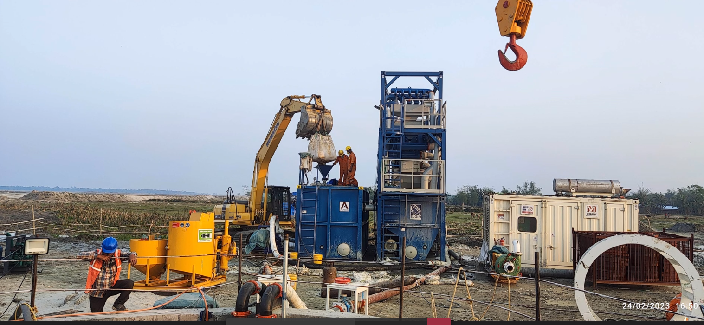
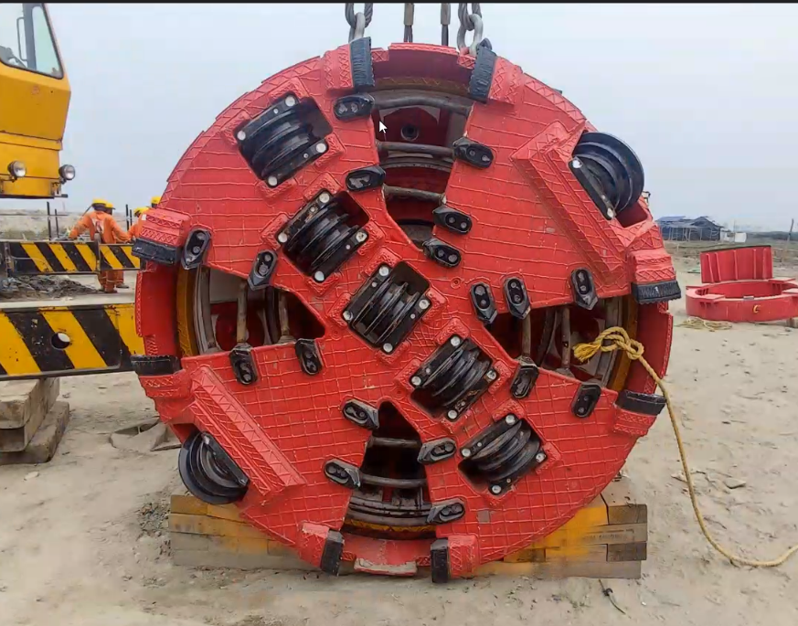

THREE DIRECTIONS.
ONE STORY.
Explore three visual approaches for ATOZ Infracon. Each concept uses photographs from the company's underground infrastructure work.

CONCEPT 01
Corporate
A confident infrastructure portfolio with a clear view of expertise and work.

CONCEPT 02
Editorial
A lighter, photography-led story with bold type and interactive field views.

CONCEPT 03
Motion
A cinematic direction with animated sections, image transitions and a field reel.